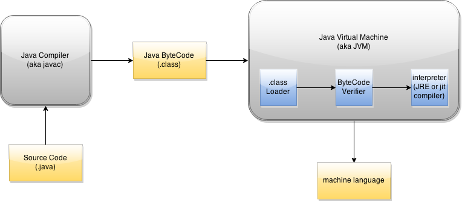

Lesson 1: Introduction to Programming
In this section, we will take quick look at programming history, basic computer architecture, and the Life Cycle of Java code.
History of Programming
*Notes will be updated*
Basic Computer Architecture
*Notes will be updated*
- Computers vs Embedded Systems
- Computer Components
Life Cycle of a Java Program
Understanding the life cycle (flow) of a Java program is essential to understanding the philosophy of Java and
its unique attributes that distinguish it from other programming languages.

It is important to note that the source code you produce is often converted into different formats. This is
done to ensure portability from one platform to another. In Java, this is accomplished by the following process:
- Integrated Development Environment (IDE)
- .java file
- Java Compiler
- .class file
- Java Virtual Machine
- Machine Language
Integrated Development Environment:
Source code is a list of commands you want to compile. In this tutorial, you can develop source code through an editor such as Eclipse or Netbeans. This is simply an environment that assists you in writing your code with tools such as Data Structures, consoles, and debugging features. As a matter of fact, you can directly write your source code in an empty text file and change the extension from .txt to .java.
.java Files:
As mentioned above, .java files contain code that has a purpose and task. This code is represented by Java, a programming language designed to convey english and mathematical statements to computers.
Here is a theoretical example as to why Java is preferred to machine language:
public FirstAssignment {
public static void main(String args[]) {
int x = 5, y = 5;
System.out.println(x + y);
}
}
In the example above, the FirstAssignment.java (written through a text file or IDE such as Eclipse) contains source code. The source code does not necessarily contain syntactically correct English or mathematical statements; however, humans can understand the purpose of the code. As mentioned above, computers only understand high voltage and low voltage signals (1's and 0's). Clearly, communicating with computers through programming languages such as Java reduce errors and increase efficiency as opposed to communicating with numbers:
#0x92
#0x23
#0x66
#0x87
#0xF5